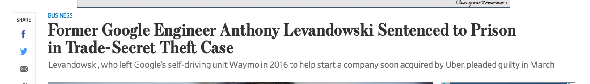
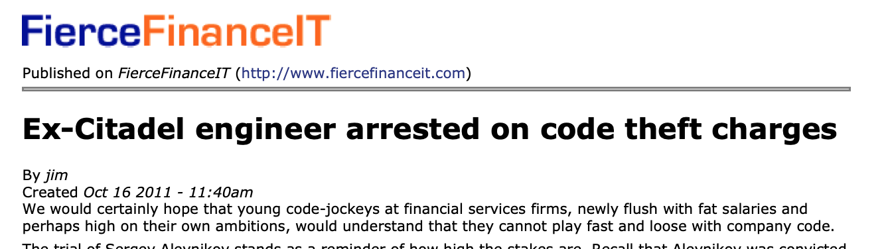
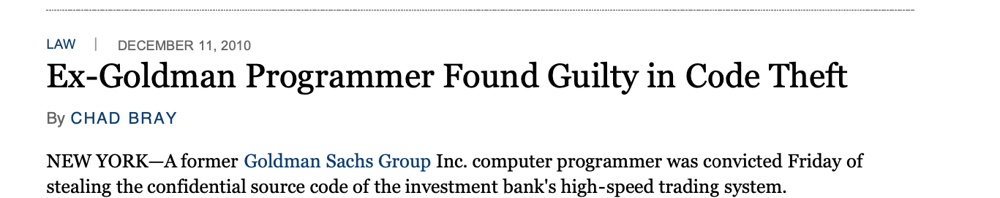

General

Instructor
D
Time
Location
Jason Hemann
MW
03:30pm–04:45pm
McNulty 109
Organization The course is a "studio" course, a concept that originated in art schools. In a studio course, the instructor presents basic techniques, discusses domain knowledge for specific projects, and then teaches with the help of student presentations.
Coding is all about comprehending code. Doing well with this task demands tremendous practice. Hence when your peers present code, it is critical for you to read, understand, and analyze their explanations and justifications: their problem analysis, their interface and protocol design, their component design, and their code. The presenters will learn to communicate about products to a team, to defend their design decisions, and to get help with weak spots. Conversely, the listeners will learn to analyze and to critique a product, helping the presenter uncover flaws. For details on how we will conduct the presentations, see the Project page.
Final Code Walks In lieu of a final, we will conduct an extensive code walk of your projects. If the course progresses on schedule, the final code walks will be held during the finals examination period. If the course progresses faster than anticipated, all final code walks will take place during the final week of classes.
We may also have a final voluntary game competition after the finals are over and before grades are due.
Grades The final grading scale is to be determined.
The goal is to run this course for adults who are enrolled because they have a deep, burning desire to learn. They respect a basic honor code, which includes neither Cheating nor helping in an inappropriate manner.
#lang typed/racket (define (% {x : Real}) (/ x 100)) (define HOMEWORK (% 40)) (define CODE-WALKS (% 20)) (define PANELS (% 20)) (define FINAL (% 14)) (define LAB-BOOK (% 5))
All aspects, except code walks and panel functions, will be graded on an instructor-specified normal point scale. Each in-class presentation is graded on the following scale: ok+, ok, ok-, and zero. Pairs that do not pair program will be discovered and the grades will be reduced for both partners. At the end of the course, the class as a whole will determine how these grades translate into numeric values.
If these assumptions are violated at any point during the semester, we will give a final exam that will count for at least 50% of the overall grade.
The lead instructor is known to use the entire scale of grades, from A+ to F-.
Cheating


